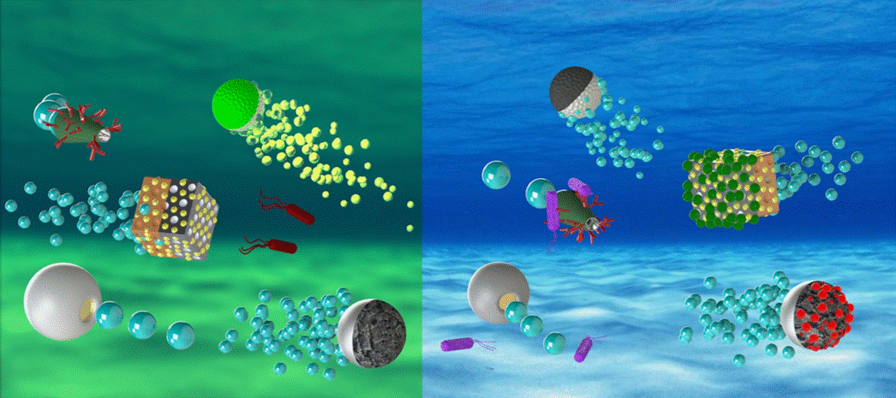
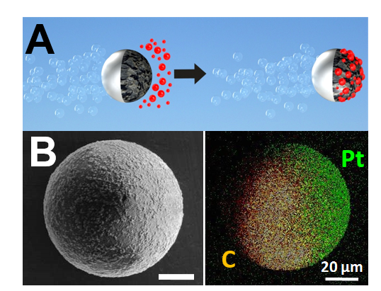
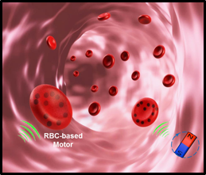
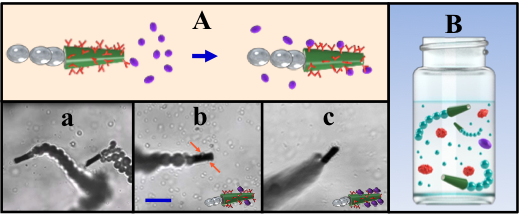
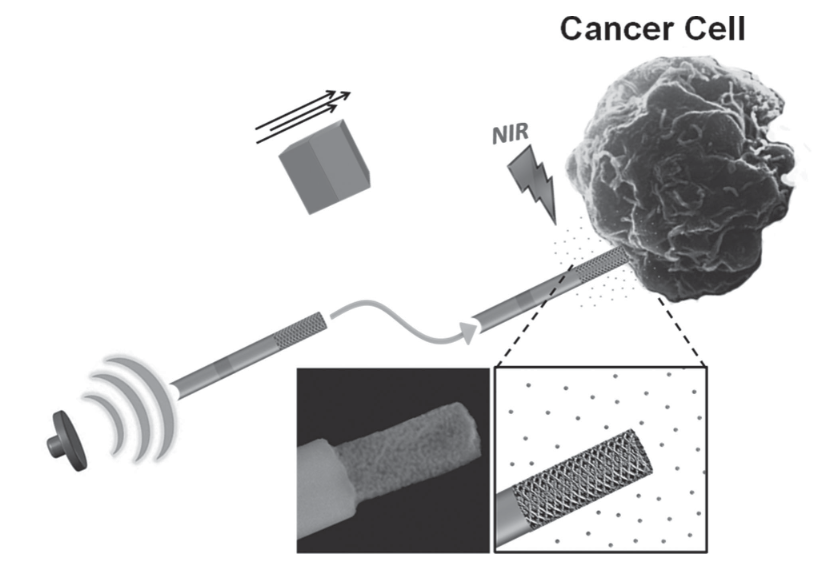

Mechanical Projects
-

My Publications
My research primarily involved environmental remediation (sarin, anthrax spores and harmful bacteria) using various nanomotors. I also dabbled a bit in nanomotor based drug delivery (red blood cell based micromotors). Click the button above to see my 9 coauthored publications! -

Read the Publication!
Self-Propelled Activated Carbon Janus Micromotors for Efficient Water Purification
Self-propelled activated carbon-based Janus particle micromotors that display efficient locomotion in environmental matrices and offer effective ‘on-the-fly’ removal of wide range of organic and inorganic pollutants are described. The new bubble-propelled activated carbon Janus micromotors rely on the asymmetric deposition of a catalytic Pt patch on the surface of activated carbon microspheres. -

Read the Publication!
Turning erythrocytes into functional micromotors
Turning natural red blood cells (RBCs) into functional micromotors with the aid of ultrasound propulsion and magnetic guidance. Iron oxide nanoparticles are loaded into the RBCs, where their asymmetric distribution within the cells results in a net magnetization, thus enabling magnetic alignment and guidance under acoustic propulsion. The RBC motors display efficient guided and prolonged propulsion in various biological fluids, including undiluted whole blood. -

Read the Publication!
Micromotors to capture and destroy anthrax simulant spores
Efficient destruction of the anthrax simulant spores is demonstrated via the micromotor-induced mixing of a mild oxidizing solution. The new micromotor-based approach paves a way to dynamic multifunctional systems that rapidly recognize, isolate, capture and destroy biological threats. -

Read the Publication!
Bubble-Propelled Micromotors for Enhanced Transport of Passive Tracers
Fluid convection and mixing induced by bubble-propelled tubular microengines are characterized using passive microsphere tracers. Enhanced transport of the passive tracers by bubble-propelled micromotors, indicated by their mean squared displacement (MSD), is dramatically larger than that observed in the presence of catalytic nanowires and Janus particle motors. Bubble generation is shown to play a dominant role in the effective fluid transport observed in the presence of tubular microengines. These findings further support the potential of using bubble-propelled microengines for mixing reagents and accelerating reaction rates. -

Read the Publication!
Bubble-Ultrasound-Propelled Nanoporous Gold Wire for Efficient Drug Loading and Release
Ultrasound (US)-powered nanowire motors based on nanoporous gold segment are developed for increasing the drug loading capacity. The new highly porous nanomotors are characterized with a tunable pore size, high surface area, and high capacity for the drug payload. -

My Publications
Artificial Micromotors in the Mouse’s Stomach: A Step toward in Vivo Use of Synthetic Motors
(a) Schematic of the in vivo propulsion and tissue penetration of the zinc-based micromotors in mouse stomach. (b) Preparation of PEDOT/Zn micromotors using polycarbonate membrane templates: (I) deposition of the PEDOT microtube, (II) deposition of the inner zinc layer, and (III) dissolution of the membrane and release of the micromotors. -

GitHub
My mechanical background came from my undergraduate degree in nanoengineering. Currently, I am a graduate student in data science, I mostly do python and spark for various types of machine learning and/or data analysis. All my code and coursework is located on my Github page!